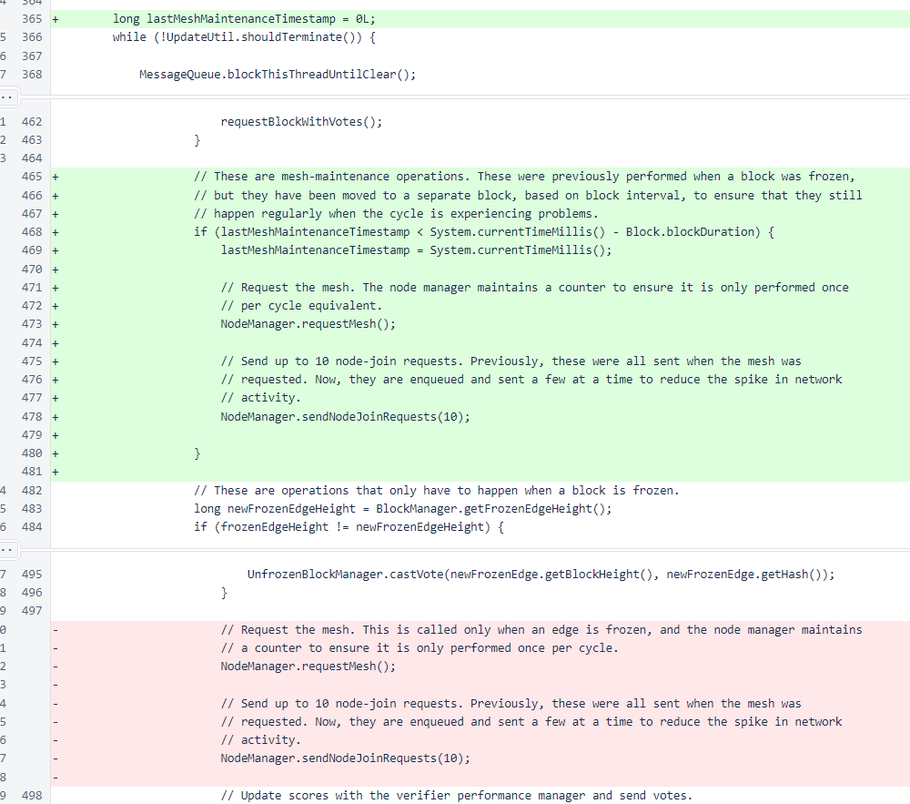

Nyzo version 536 (commit on GitHub) changes mesh maintenance to a timed interval.
This version affects the verifier only.
In Verifier, the recurring node-join process has been moved outside the section of code that is performed only when blocks are frozen. It is now performed on a timed interval equal to block duration. In normal operation of the cycle, this has little effect. In times when the cycle is processing slowly or is stalled, this will ensure that the connectedness of the mesh does not suffer due to the stall.
